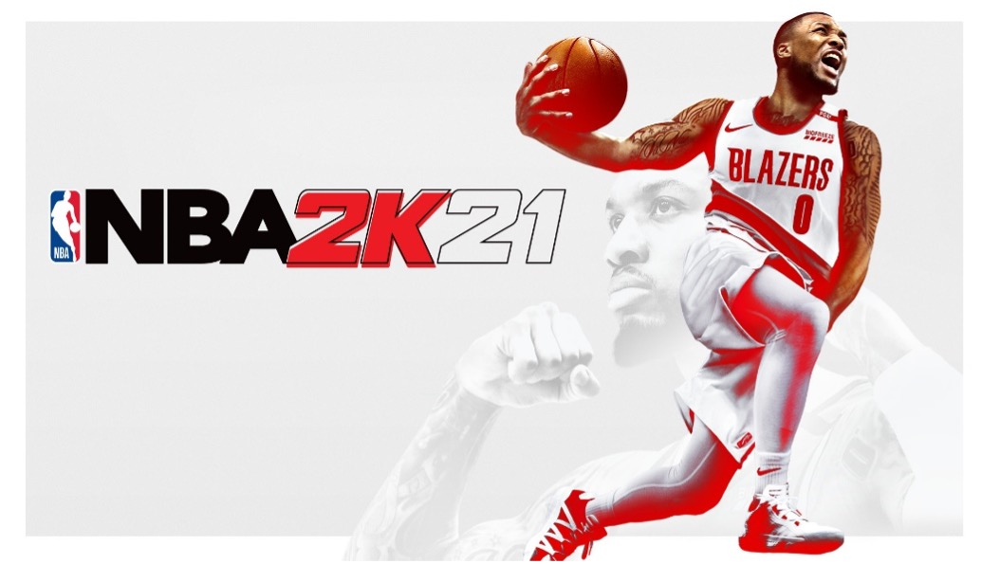
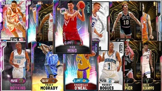
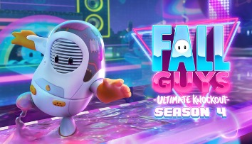
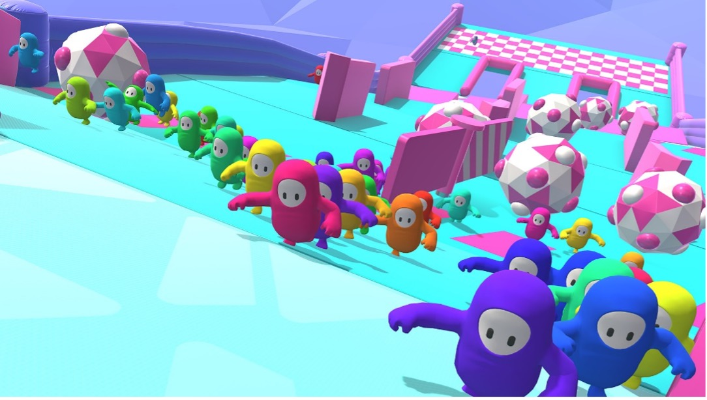
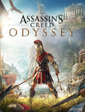
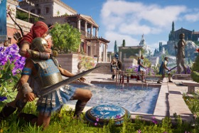
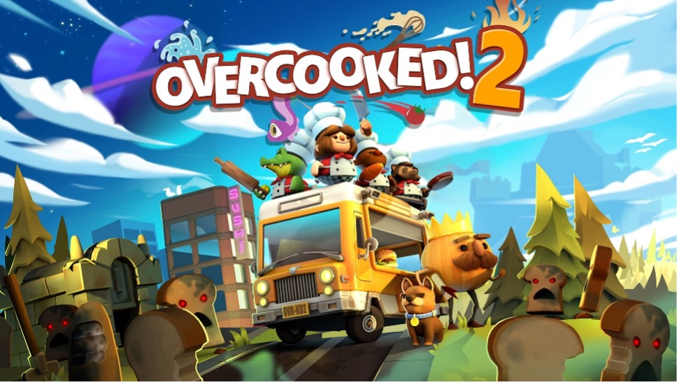
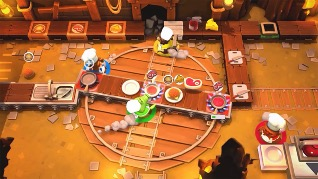
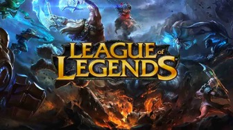
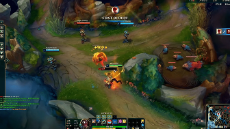

NBA 2K21 is a basketball game simulation video game that was developed by Visual Concepts and published by 2K Sports, based on the National Basketball Association (NBA). It is the 22nd installment in the NBA 2K franchise and the successor to NBA 2K20. The game was released on September 4, 2020 for Microsoft Windows, Nintendo Switch, PlayStation 4, Xbox One, and Stadia, and on November 12, 2020 for PlayStation 5 and Xbox Series X and Series S. The PS4, Switch, Xbox One, and PC released to mixed reviews, with critics criticizing the lack of originality in the gameplay, as well as microtransactions and bugs.
 A staple of the series, MyCareer, returns as one of the available game modes. MyCareer is a career mode in which the player creates their own customizable basketball player and plays through their basketball career. Players may make a male or female player, although female is only available on next-gen consoles. The Neighborhood also returns to MyCareer, as 2K Beach, in which players can customize their wardrobe, get haircuts and tattoos, and purchase boosts. They can also do their workouts and run drills to improve their attributes at their current team's practice facility. Progress in MyCareer may not carry over across generations, due to some changes made exclusively for next-gen.
Cyberpunk 2077 is a 2020 action role-playing video game developed and published by CD Projekt. The story takes place in Night City, an open world set in the Cyberpunk universe. Players assume the first-person perspective of a customisable mercenary known as V, who can acquire skills in hacking and machinery with options for melee and ranged combat.
CD Projekt released Cyberpunk 2077 for PlayStation 4, Stadia, Windows, and Xbox One on 10 December 2020, with PlayStation 5 and Xbox Series X/S versions planned to follow in 2021.
Fall Guys: Ultimate Knockout is a platform battle royale game developed by Mediatonic and published by Devolver Digital. It was released for Microsoft Windows and PlayStation 4 on 4 August 2020. The game is planned for release on Nintendo Switch, Xbox One, and Xbox Series X/S in mid 2021.
 Up to 60 players control jelly bean-like creatures and compete against each other in a series of challenges, such as obstacle courses or tag. Many different courses have been added since the game was first released; the minority are team-based, while many require not falling into lava on a spinning, floating platform with obstacles designed to knock players in and waiting for a specified number of others to be eliminated, but most are obstacle courses that involve players racing to get to the finish line as soon as possible, lest they are annihilated—starting at 40, there is a limited number of players that can qualify, and with each round as the game progresses, the number lowers, eventually getting down to one, the player who is crowned the winner.
Assassin's Creed Odyssey is an action role-playing video game developed by Ubisoft Quebec and published by Ubisoft. It is the eleventh major installment, and 21st overall, in the Assassin's Creed series and the successor to 2017's Assassin's Creed Origins. Set in the years 431–422 BC, the plot tells a mythological history of the Peloponnesian War between Athens and Sparta. Players control a male or female mercenary who fights on both sides of the conflict as they attempt to find their family.
 Assassin's Creed Odyssey was released worldwide for Microsoft Windows, PlayStation 4, Xbox One, and Nintendo Switch on October 5, 2018, with a Stadia version launching alongside the service in 2019.
Overcooked 2 (stylised as Overcooked! 2) is a cooperative cooking simulation video game developed by Team17 alongside Ghost Town Games, and published by Team17. The sequel to Overcooked!, it was released for Microsoft Windows, Nintendo Switch, PlayStation 4 and Xbox One on August 7, 2018. Overcooked: All You Can Eat, a compilation game that includes both Overcooked and Overcooked 2, was released for PlayStation 5 and Xbox Series X/S.
 In the cooking simulator game Overcooked 2, teams of up to four players cooperatively prepare and cook orders in absurd restaurants. Players gather, chop, and cook ingredients, combine them on plates, serve dishes, and wash dishes. Between coordinating short orders and bumping into each other's characters, the game tends to overwhelm. The sequel builds atop the original game, which was released in 2016, with new interactive levels, restaurant themes, chef costumes, and recipes. Some levels have moving floors and other obstacles that complicate the cooking process, including portals, moving walkways, and impassable fires. Other levels transition between settings and recipes, such as one that begins with preparing salads in a hot air balloon and ends crash-landed in a sushi kitchen. The sequel introduces ingredient tossing, such that players can throw items to another chef or pot from far away, and online multiplayer, in which teams can connect either across a local wireless network or through online matchmaking.
Popular MOBA from Riot Games finally launched on Mobile
 